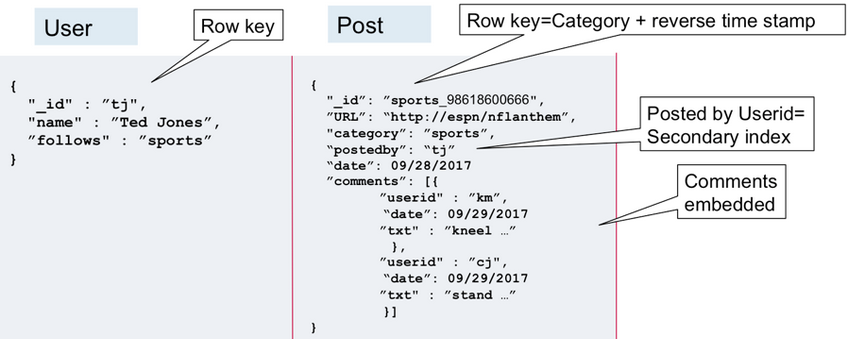
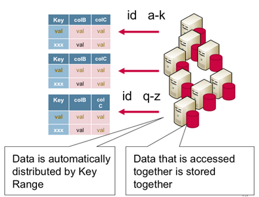

noSQL
- Es util comenzar por definir entidades, atributos y relaciones. Siempre que sea util, se pueden seguir las normas de SQL para identificar las entidades debiles.
- Es importante recordar, los datos que se leen juntos se deben almacenar juntos. Por ejemplo:
* Una web de post tiene las entidades 'Users', 'Posts' y 'Comments'.
* En SQL, 'Comments' se relacionaria con las otras dos entidades.
* En noSQL se debe decidir con cual agruparla. Para este caso se privilegia el acceso a los 'Posts', por lo que 'Comments' quedaria como su embedded object.
- Si un embedded object es demasiado grande (el tamaño optimo es entre 50-100KB). Puede solo agregarse su row key y almacenarlo en su propia tabla.
- Para cada documento se designa un id (row key). Se pueden crear “composite” row key con varios datos, *No se si aplica a todas las noSQL* esto puede ser util para (indexar) agrupar filas. En el ejemplo, la key es compuesta por la categoria y el timestamp.
RELATIONAL TO DOCUMENT MODEL EXAMPLE 

MAPR Documentation - ROW KEY RELEVANCE 
status: Muestra informacion sobre el estado actual del servidor.
stop: Detiene el servidor.
restart: Reinicia el servidor.
user: nombre del nuevo usuario.
pwd: contraseña del nuevo usuario.
customData (opcional): informacion arbitraria que se desee agregar.
roles: los roles (permisos) que tendra el usuario. Pueden ser uno o varios de estos:
authenticationRestrictions (opcional): una lista IPs desde los cuales el usuario tiene permitido concetarse a la base de datos.
Tambien se pueden insertar varios a la vez con un array de objetos
Creo que si la coleccion especificada no existe la crea.
Para acceder a objetos dentro de objetos se coloca la key como si se accediera desde JavaScript con dot notation.
Por ejemplo: "address.city": "London" Si no se colocan argumentos devuelve todos los registros de la coleccion
Los argumentos (criterio de busqueda) se colocan como key:value.
Modificadores (opcionales):
$or: [{}] permite colocar un array de objetos para especificar varios values (criterios) para un mismo key.
key: {$gt: [numero]} greater than, permite buscar con un mayor que.
key: {$lt: [numero]} less than, permite buscar con un menor que.
key: {$regex: [regex]} permite buscar con Regular Expressions.
-Primero: El criterio de seleccion de los datos, igual como se pondria en el metodo find().
-Segundo: El nuevo registro. Sobreescribe el objeto actual.
Modificadores dentro del segundo argumento:
La key $set permite modificar solo las propiedades que contenga el objeto que se le pasa como value.
La key $unset permite eliminar solo las propiedades que contenga el objeto que se le pasa como value. El value del objeto que recibe $unset es boolean y se especifica con 1 o 0.
La key $rename permite modificar el nombre de la key especificada. Recibe un objeto donde la key es la key actual (que se desea modificar) y el value es el nuevo nombre que se quiere dar a la key.
$inc: { key: [numero] } incrementa el value de la key especificada en base al [numero].
$dec: { key: [numero] } decrementa el value de la key especificada en base al [numero].
-Tercero (opcional): permite crear un nuevo dato en caso de que el que se intenta actualizar no exista.
Por lo general se concatena al final de la query.